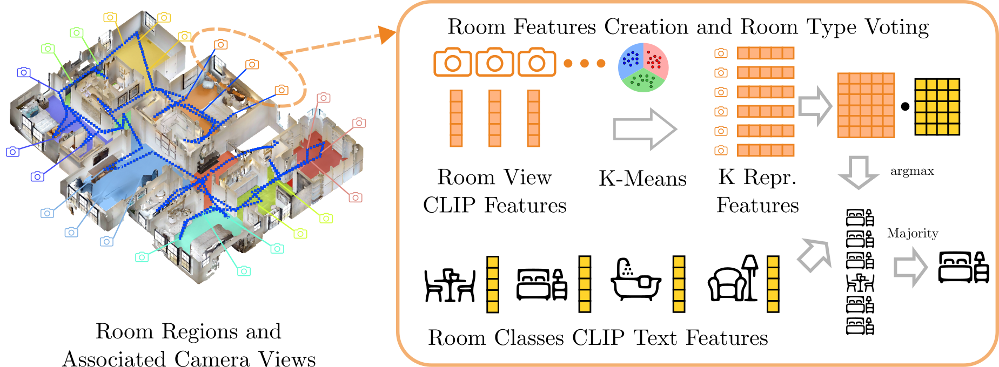

all videos are played in 4x speed
Typically, robotic mapping relies on highly accurate dense representations obtained via approaches to simultaneous localization and mapping. While these maps allow for point/voxel-level features, they do not provide language grounding within large-scale environments due to the sheer number of points. In this work, we present HOV-SG, a hierarchical open-vocabulary 3D scene graph mapping approach for robot navigation. Using open-vocabulary vision foundation models, we first obtain state-of-the-art open-vocabulary maps in 3D. We then perform floor as well as room segmentation and identify room names. Finally, we construct a 3D scene graph hierarchy. Our approach is able to represent multi-story buildings and allows robots to traverse them by providing feasible links among floors. We demonstrate long-horizon robotic navigation in large-scale indoor environments from long queries using large language models based on the obtained scene graph tokens and outperform previous baselines.
The key idea of building a Hierarchical Open-Vocabulary 3D Scene Graph (HOV-SG) is to first segment-level open-vocabulary mapping and then construct a hierarchical scene graph in a top-down manner.
The main idea of building a segment-level open-vocabulary map is to create a list of 3D point clouds, namely segments, from an RGB-D video with odometry and assign each segment an open-vocabulary feature generated by a pre-trained visual-and-language model (VLM). Unlike previous works that enriched each point in a 3D reconstruction with an independent visual-language feature, we leverage the fact that neighboring points in the 3D world often share the same semantic information. This largely reduces the saved semantic-relevant features while maintaining an excellent descriptive capability of the representation. A segment in our map reflects the essence of the vicinity of the points while the open- vocabulary features contain relevant semantic information. The mapping process is showed in the left and the center blocks of the overview figure.
Given the segment-level open-vocabulary map, we construct a hierarchical 3D scene graph in a top-down manner. In order to separate floors, we identify peaks within a height histogram over all points contained in the point cloud. We apply adaptive thresholding and DBSCAN clustering to obtain potential floors and ceilings. We select the top-2 levels in each cluster. Taken pairwise, these represent individual floors (floor and ceiling) in the building as in the figure above. We equip each floor node with a CLIP text embedding using the template “floor {#}”. An edge between the root node and the respective floor node is established.
Based on each obtained floor point cloud, we construct a 2D bird’s-eye-view (BEV) histogram as outlined in the right part of the figure above. Next, we obtain walls and apply the Watershed algorithm to obtain a list of region masks. We extract the 3D points that fall into the floor’s height interval as well as the BEV room segment to form room point clouds that are used to associate objects to rooms later. Each room constitutes a node and is connected to its corresponding floor.
In order to attribute room nodes, we associate RGB-D observations whose camera poses reside within a BEV room segment to those rooms. The CLIP embeddings of these images are filtered by extracting k representative view embeddings using the k-means algorithm. During the query, we compute the cosine similarity between the CLIP text embeddings of a room categories list and each representative feature, resulting in a similarity matrix. With the $\operatorname{argmax}$ operation, we obtain opinions from all representatives, allowing retrieval of the room type voted by the majority. These K representative embeddings and the room point cloud are jointly stored in the root node in the graph. An edge between the floor node and each room node and its parent floor node is established. The construction and querying of room features are illustrated in the figure above.
We evaluate the open-vocabulary 3D semantic segmentation performance on the ScanNet and Replica datasets. We compare our method with two competitive vision-and-language representations, namely ConceptFusion and ConceptGraphs, and ablate over two CLIP backbones. In terms of mIOU and F-mIOU, HOV-SG outperforms the open-vocabulary baselines by a large margin. This is primarily due to the following improvements we made: First, when we merge segment features, we consider all point-wise features that each segment covers and use DBSCAN to obtain the dominant feature, which increases the robustness compared to taking the mean as done by ConceptGraphs. Second, when we generate the point-wise features, we use the mask feature which is the weighted sum of the sub-image and its contextless counterpart, to some extent mitigate the impact of salient background objects. Some qualitative results are shown in the figure.
Existing open-vocabulary evaluations usually circumvent the problem of measuring true open-vocabulary semantic accuracy. This is due to arbitrary sizes of the investigated label sets, a potentially enormous amount of object categories, and the ease of use of existing evaluation protocols. While human-level evaluations solve this problem partly, robust replication of results remains challenging. In this work, we propose the novel AUCktop metric that quantifies the area under the top-k accuracy curve between the predicted and the actual ground-truth object category. This means computing the ranking of all cosine similarities between the predicted object feature and all possible category text features, which are in turn encoded using a vision-language model (CLIP). Thus, the metric encodes how many erroneous shots are necessary on average before the ground-truth label is predicted correctly. Based on this, the metric encodes the actual open-set similarity while scaling to large, variably-sized label sets. We envision a future use of this metric in various open-vocabulary tasks.
A major advantage of HOV-SG is that it enables robots to navigate across multiple floors to various semantic concepts with hierarchical relationship constraints. To validate the system in the real world, we run a Boston Dynamics Spot robot mounted with a calibrated Azure Kinect RGB-D camera and a 3D LiDAR to collect a stream of RGB-D sequences inside a two-storage office building, traversing through a variety of rooms with diverse semantic information as is shown in the figure. The tested trials are performed based on complex hierarchical language queries that specify the floor, the room, and the object to find. All hierarchical concepts relied on in these experiments are identified using our pipeline. The unique difficulty in these experiments is the typical office/lab environment with many similar rooms, which often produced similar room names. Having semantically varied rooms instead drastically simplifies these tasks. Nonetheless, as reported in the main manuscript, we reach real-world success rates of around 55% among 41 trials.

The videos show third-person views of a robot navigating to a random position in different scenes. The top-left corner image shows the starting position (red) and goal position (green) in Bird-Eye-View. The blue dots indicate the actual trajectory of the robot. The green dots indicate the temporary sub-goals.
Scene 00861-GLAQ4DNUx5U
Scene 00862-LT9Jq6dN3Ea
Scene 00877-4ok3usBNeis
@article{werby23hovsg,
Author = {Abdelrhman Werby and Chenguang Huang and Martin Büchner and Abhinav Valada and Wolfram Burgard},
Title = {Hierarchical Open-Vocabulary 3D Scene Graphs for Language-Grounded Robot Navigation},
Year = {2024},
journal = {Robotics: Science and Systems},
}